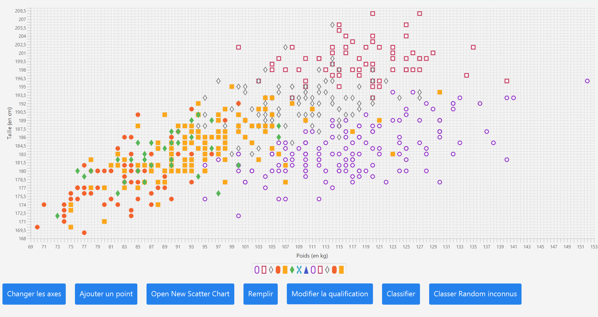

Classification de données

Description du projet
Ce projet a pour but de classer des données en fonction de leurs attributs et en les comparants entre elles. Il s'agit d'un projet de classification de données, qui permet de déterminer à quel groupe appartient une donnée en fonction de ses caractéristiques. Nous avons utilisés l'algorithme des K-Nearest Neighbors pour déterminer à quel groupe appartient une donnée et notamment grâce à la distance euclidienne ou la distance de Manhattan.
Composants clés
- Importation de données depuis un fichier CSV
- Affichage dans une interface utilisateur
- Algorithme des K-NN
Technologies utilisées
Java
JavaFX
Figma
 Voir le dépôt GitHub
Voir le dépôt GitHub